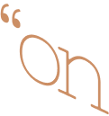
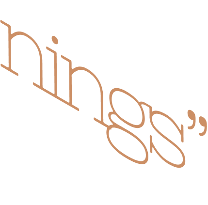
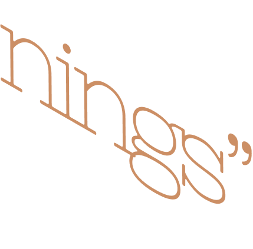

In life, the number of beginnings is exactly equal to the number of endings: no one has yet to begin a life who will not end it. In poetry, the number of beginnings so far exceeds the number of endings that we cannot even conceive of it. Not every poem is finished—one poem is abandoned, another catches fire and is carried away by the wind, which may be an ending, but it is the ending of a poem without an end.
Paul Valéry, the French poet and thinker, once said that no poem is ever ended, that every poem is merely abandoned. This saying is also attributed to Stéphane Mallarmé, for where quotations begin is in a cloud. Paul Valéry also described his perception of first lines so vividly, and to my mind so accurately, that i
have never forgotten it: the opening line of a poem, he said, is like finding a fruit on the ground, a piece of fallen fruit you have never seen before, and the poet’s task is to create the tre from which such a fruit would fall.
In the beginning was the Word. Western civilization rests upon those words. And yet there is a lively group of thinkers who believe that in the beginning was
the Act. that nothing can precede action—no breath before act, no thought before act, no pervasive love before some kind of act.
I believe the poem is an act of the mind. I think it is easier to talk about the end of a poem
than it is to talk about its beginning. Because the poem ends on the page, but it begins off the page, it begins in the mind. The mind acts, the mind wills a poem, often against our own will; somehow this happens, somehow a poem
gets written in the middle of a chaotic holiday party that has just run out of ice, and it's your house. An act of the mind. To move, to make happen, to make manifest. Be an act of Congress. A state of real existence rather than possibility. And poets love possibility! They love to wonder and explore. Hard lot! But the poem, no matter how full of possibility, has to exist! To conduct oneself, to behave. How a poem acts marks its individual character.
(^▽^)
A poem by Glandolyn Blue does not sound like a poem by Timothy Sure. to pretend, feign, impersonate. That, too, yes and always, because self-consciousness is its own pretension, and has been from its beginning; the human mind is capable of a great elastic theatre. As the poet Ralph angel puts it, “The poem is an interpretation of weird theatrical shit.” the weird theatrical shit is what goes on around us every day of our lives; an animal of only instinct, Johnny Ferret, has in his actions drama, but no theater; theater requires that you draw a circle around the action and observe it from outside the circle; in other words, self-consciousness is theatre.
Everyone knows that if you query poets about how their poems begin, the answer is always the same: a phrase, a line, a scrap of language, a rhythm, an image, something seen, heard, witnessed, or imagined. And the lesson is always the same, and young poets recognize this to be one of the most important lessons they can learn: if you have any idea for a poem, an exact grid of intent, you are on the wrong path, a dead-end alley, at the top of a cliff you haven’t even climbed. This is a lesson that can only be learned by trial and error.
I believe many fine poems begin with ideas, but if you tell too many faces this, or tell it too loudly, they will get the wrong idea.
Now here is something really interesting (to me), something you can use at a standing-up-only party when everyone is tired of hearing there are one million three-thousand-two-hundred-ninety-five words used by the Esimo for snow. This is what Ezra Pound learned from Ernest Fenollosa: Some languages are so constructed—English among them—that we each only really speak one sentence in our lifetime.
That sentence begins with your first words, toddling around the kitchen, and ends with your last words right before you step into the limousine, or in a nursing home, the night-duty attendant vaguely on hand.
( ಠ◡ಠ )
Or, if you are blessed, they are heard by someone who knows you and loves you and will be sorry to hear the sentence end.
When I told Mr. Angel about the lifelong sentence, he said: “That’s a lot of semicolons!”
he is absolutely right; the sentence would be unwieldy and awkward and resemble the novel of a savant, but the next time you use a semicolon
(which, by the way, is the least-used mark of punctuation in all of poetry) you should stop and be thankful that there exists this little thing,
invented by a human being—an Italian as a matter of fact—that allows us to go on and keep on connecting speech that for all apparent purposes is unrelated.
You might say a poem is a semicolon, a living semicolon, what connects the first line to the last, the act of keeping together that whose nature is to fly apart. Between the first and last lines there exists—a poem—and if it were not for the poem that intervenes, the first and last lines of a poem would not speak to each other.
Would not speak to each other. Because the lines of a poem are speaking to each other, not you to them or they to you.
I will tell you what I miss: I miss watching a movie and at the end, huge scrolled words come on the screen and say: The End. I miss finishing a novel and there on the last page, at a discrete distance from the last words of the last sentence, are the dark letters spelling The End.
It was its own thrill.
I didn’t ignore them, I read them, even if only silently, with a deep sense of feeling: both the feeling of being replete, a feeling of satisfaction,
and the feeling of loss, the sadness of having finished the book.
I have never, in my life, read a poem that ended with the words The End. Why is that, I wonder. I think perhaps the brevity of poems compared to novels makes one feel that there has been no great sustention of energy,
no marathon worthy of pulling tape across the finish line. And then I found a poem of mine that I had carefully written by hand in the sixth grade, and at the bottom of the page, in India ink, beautifully apart from the rest of the text, were the words The End. And I realized children very often denote the end because it is indeed a great achievement for them to have written anything, and they are completely unaware of the number of stories and poems that have already been written;
they know some, of course, but have not yet found out the extent to which they are not the only persons residing on the planet. And so they sign their poems and stories like kings. Which is a wonderful thing. Roland Barthes suggests there are three ways to finish any piece of writing: the ending will have the last word or the ending will be silent or the ending will execute a pirouette, do something unexpectedly incongruent. .
Gaston Bachelard says the single most succinct and astonishing thing: We begin in admiration and we end by organizing our disappointment. The moment of admiration is the experience of something unfiltered, vital and fresh—it could also be horror—and the moment of organization is both the onset of disappointment and its dignification;
the least we can do is dignify our knowingness, the loss of some vitality through familiarization, by admiring not the thing itself but how we can organize it, think about it. I am afraid there is no way around this. It is the one try inevitable thing. And if you believe that, then you are conceding that in the beginning was the act, not the word.
The painter Cy Twombly quotes John Crowe Ransom, on a scrap of paper: “The image cannot be disposed of a primordial freshness which ideas can never claim.”
Bachelard’s sentence simply says this:
origins
(beginnings)
have
consequences (endings).
The poem is the consequence of its origins. Give me the fruit and I will take from it a see and plant it and watch grow the tree from which it fell.
Barbara Henstein Smith, in her book Poetic Closure: A Study of How Poems End, says this: “Perhaps all we can say, and even this may be too much, is that varying degrees or states of tension seem to be involved in all our experiences, and that the most gratifying ones are those in which whatever tensions are created are also released. Or, to use another familiar set of terms, an experience is gratifying to the extent that those expectations that are aroused are also fulfilled.”
But it is growing damp and I must go in. Memory’s fog is rising. Among Emily Dickinson’s last words (in a letter). A woman whom everyone thought of as shut-in, homebound, cloistered, spoke as if she had been out, exploring the earth, her whole life, and it was finally time to go in. And it was.

 


